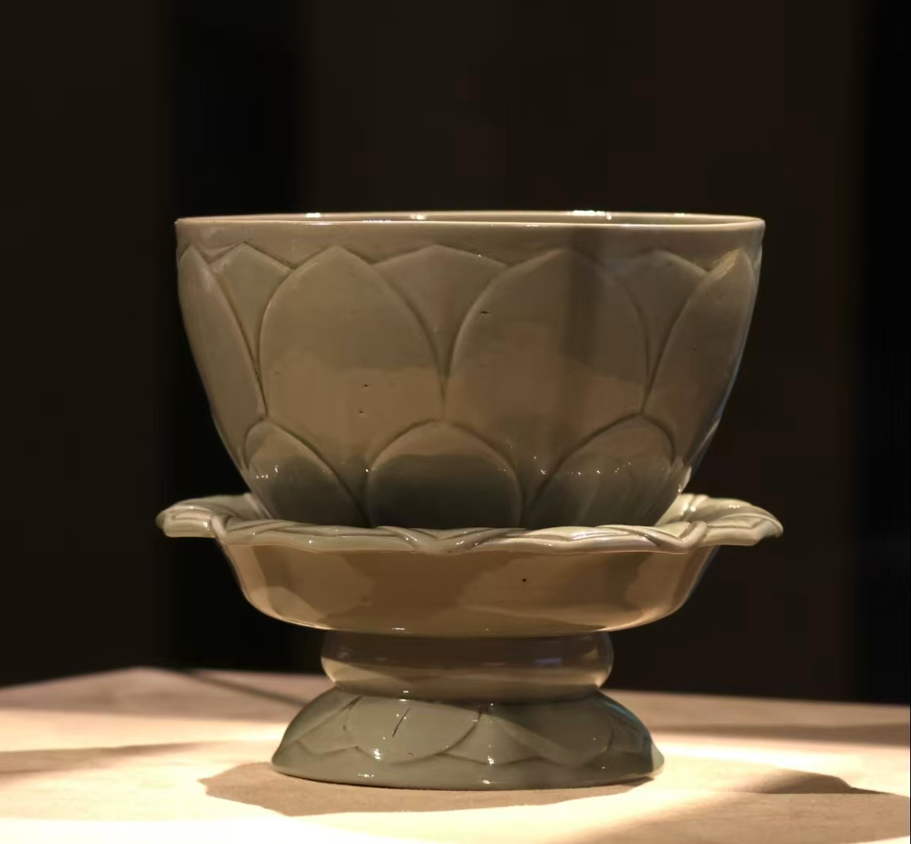
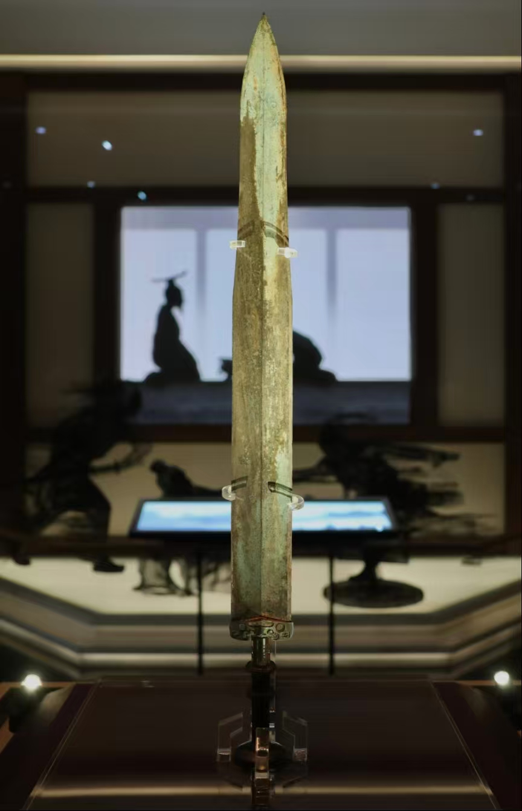
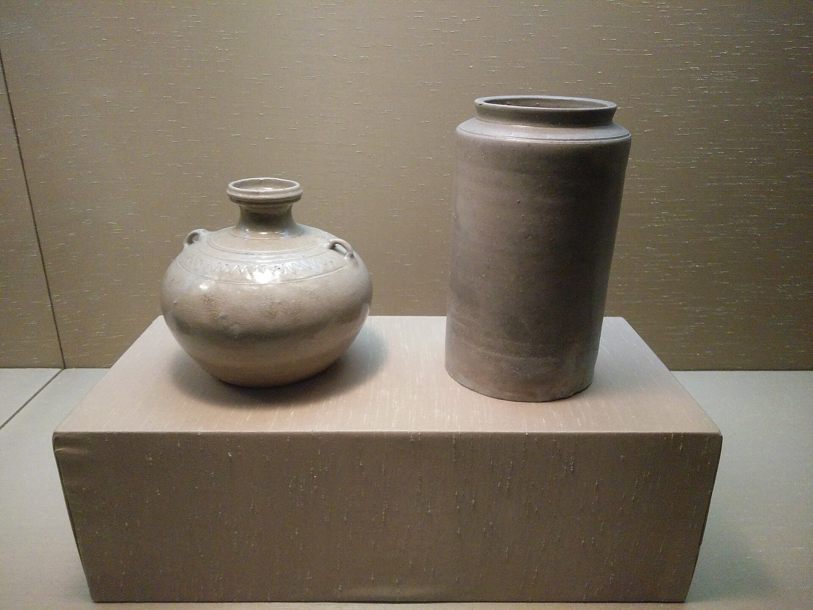

Motivation and Research



📌 Reason Report
We chose cultural heritage as our project theme, combined with youth social interaction and positive lifestyle needs. Nowadays, traditional museum cultural heritage resources are rich but poorly communicated to young people. Most young users regard museum visits as tedious and passive sightseeing, lacking active exploration motivation and interesting interactive ways to engage with cultural heritage. Meanwhile, existing museum applications are mostly complex to install, single in function, and lack game-based check-in and lightweight AR experience.
Our group aims to design a Web AR museum check-in and guidance system, lowering the entry threshold without downloading applications. By integrating AR navigation, intelligent cultural explanation and interactive check-in mechanisms, we stimulate young people’s interest in cultural heritage, encourage offline museum visits, build casual social sharing behaviour, and guide a positive lifestyle of understanding history, appreciating art and enriching spiritual life in daily leisure time.
🔍 Research Background & Design Motivation
With the deep integration of digital technology and museum scenarios, AR navigation and AI interpretation have become effective ways to attract young visitors. Nevertheless, most existing museum solutions face common limitations, including homogenized content, weak interactivity, and poor lightweight experience. Traditional AR game development requires high costs and causes heavy performance consumption, while mainstream museum applications rely on single textual or audio guidance, lacking attractive interactive mechanisms.
This project focuses on the core pain point that modern young users generally regard museum visits as boring and passive. We design a lightweight WebAR museum system based on Unity and WebGL. By adopting AR scene recognition, intelligent AI explanation, and gamified check-in mechanics, the project delivers an immersive and low-threshold visiting experience without downloading additional applications, helping young users better understand cultural heritage and increasing long-term museum engagement.
📄 Academic Paper Analysis
| Research Topic | Key Strengths | Main Limitations |
|---|---|---|
| Generative AI & Digital Museum Experience | Optimize interactive participation, realize personalized cultural interpretation | Unstable content accuracy, risk of cultural misunderstanding |
| AI Interactive Museum Exhibition | Improve visitor engagement and information efficiency, enhance entertainment | Highly dependent on design quality, lack of scalable lightweight solutions |
| AR Gamification in Science Museums | Strengthen emotional interaction and knowledge popularization | Small experimental scale, easy to cause experience overload |
| AR Technology for Historical Museums | Build cross-temporal cultural connection and improve satisfaction | Strong scenario restriction, high technical threshold |
🏆 Product Benchmark Analysis
| Existing Product | Advantages | Limitations |
|---|---|---|
| Digital Palace Museum | Authoritative content, complete 3D exhibition resources | Large installation package, insufficient lightweight interaction |
| Cloud Dunhuang | Elegant visual style, lightweight web browsing | Lack of real-scene AR recognition and on-site guidance |
| Traditional Museum Guide App | Stable audio commentary and basic navigation | Single interaction, no gamification or social attributes |
[1] X. Hao, J. Xu, and Y. Wang, "How generative AI shapes user perceived value and adoption intention in digital museum experiences," npj Heritage Sci., vol. 13, no. 1, pp. 1–17, Nov. 2025.
[2] C.-H. Kung and P.-S. Lin, "A study on the application of artificial intelligence in interactive museum displays," Int. J. Organ. Innov., vol. 17, no. 2, pp. 155–167, Oct. 2024.
[3] A. D. Baswedan and S. Tokuhisa, “The adventure in science museum: AR game featuring anthropomorphized companion,” in Companion CHI PLAY, Oct. 2024.
[4] Y. Tang and Q. Zhou, “Inspired by intertemporal connections: Using AR technology to enhance visitor satisfaction,” Tourism Manage., vol. 108, Jun. 2025.
User demand Research
🧭 User Journey Map
🔍 Discovery & Entry
Action: Opens webpage in hall, no download waiting.
Emotion: Slight suspicion → initial acceptance.
🏛️ Exploration & Deep Dive
Action: Scans exhibits, taps annotations for soil layers & craftsmanship.
Emotion: Curiosity engaged → immersive focus.
💡 Interaction & Understanding
Action: AI chat, listens to restoration story.
Emotion: Efficient and satisfying deep-dive.
🎒 Harvest & Departure
Action: Bookmarks items, browses community posts.
Emotion: Fulfilled and certain.
📈 Emotional Curve: Skeptical → Acceptance → Immersive → Satisfied → Fulfilled (Steady upward)
✨ Attraction & Discovery
Action: Drawn by poster animations, opens webpage.
Emotion: Bored wandering → curious.
📷 Check-in & Picture-Perfect
Action: Takes “alive” artifact photo with virtual relic.
Emotion: Delightful surprise.
🌟 Generate & Share
Action: AI interaction, shares to Moments.
Emotion: Playful pride.
🎁 Memento & Closure
Action: Browses posts, interacts with others.
Emotion: Light satisfaction.
📈 Emotional Curve: Bored → Curious → Delight → Pride → Satisfied (Low start, cheerful peaks)
📊 Questionnaire Survey
+


Preliminary Investigation (Before Using the Program)
+Interview 1: Young Person (22 years old, senior university student)
Interview 2: Young Adult (20 years old, sophomore)
Design Concept & Visual Gallery
📱 Low-fidelity Prototype
Explore our interactive low-fidelity prototype on Figma:
🔗 Open Figma Prototype (ARtifact)The prototype demonstrates core user flows: AR check-in, navigation overlay, badge collection and AI explanation interface.
In the early design stage, the team tried diverse styles including traditional Chinese aesthetics and dark-mode interfaces. After comparison, a concise and modern visual style was finally selected to adapt to dim museum lighting and AR superposition effects.
To reduce development pressure, the project abandoned high-cost mini-games for each exhibit. Instead, a unified check-in and achievement system was constructed, balancing development cost, user experience and long-term iteration.


Technological realization

📱 Unity + WebGL
Cross-platform, browser-based, no installation.
🎯 UnityWebAR
Image recognition & tracking for AR check-in.
🤖 Gemini 1.5 Flash + Azure TTS
Intelligent Q&A & natural voice narration.
🗺️ AR Navigation
Virtual arrows & interactive map.
🏛️ System Architecture
This project adopts a layered modular architecture to realize the lightweight web deployment of Unity AR projects, ensuring cross-browser compatibility, stable AR interaction and efficient operation. The architecture is divided into four core layers:
1. Unity Core AR Layer: Developed based on Unity AR Foundation, integrating core AR functional modules including environmental plane detection, virtual model spatial placement, real-time pose tracking and gesture interaction. This layer unifies the underlying AR computing logic, removes mobile-exclusive redundant components, and lays a compatible foundation for web-side transplantation.
2. WebGL Compilation & Optimization Layer: Perform WebGL-specific platform configuration, switch to Universal Render Pipeline (URP) to adapt to web rendering standards, optimize resources through model simplification, texture compression and asynchronous loading, and adjust memory allocation parameters to reduce web-side operating overhead.
3. WebAR Adaptation Layer: Connect with WebXR API to implement web-side camera permission invocation and AR tracking data parsing. Develop cross-browser compatibility scripts to unify AR running logic for Chrome, Safari and other mainstream browsers, eliminating interface differences caused by browser kernel heterogeneity.
4. Web Integration & Deployment Layer: Realize two-way data communication between front-end web pages and Unity AR scenes through JavaScript. Deploy compiled static resources to a static server, configure cross-domain access policies and resource caching mechanisms to complete public network accessible deployment.
🛠️ Key Technical Challenges
- WebGL AR Tracking Drift & Delay
- Cross-Browser WebAR Compatibility Issues
- Excessive Web Resource Loading Overhead
- Unity WebGL and Web Frontend Communication Barrier
👥 Individual Contributions Framework
| Team Member | Code & Development | UI / Visual Design | Content & Copywriting | Testing & QA |
|---|---|---|---|---|
| Shiqi.Gao | ||||
| Jielin.Wang | ||||
| Yi.Li | ||||
| Kai.Xu |
※ This table records each member’s contribution in four dimensions. Details to be filled in after final collaboration review.
Evaluation and Reflection
After Using the Web AR Program
+Interview 1: Young Person (22 years old, senior university student)
Interview 2: Young Adults (20 years old, a sophomore student)
📊 System Evaluation (SUS, MES, UEQ-S)
+


📌 Final Reflection
This project carries clear social and ethical implications for cultural heritage communication and user experience design. From a social perspective, the Web AR museum check-in system lowers the barrier for young people to access traditional cultural heritage, promotes the inheritance and popularisation of museum culture, and encourages a positive leisure lifestyle by guiding more young users to engage with offline cultural venues. Ethically, the design adheres to user privacy principles: the system requires no unnecessary personal information collection, all AR and browsing data is processed locally on the browser, and no user behavioural data is illegally stored or shared. The interface and content also maintain cultural respect, avoiding arbitrary distortion or entertainment overinterpretation of historical relics.
In terms of the use of generative AI during the project, AI was reasonably adopted for academic writing polishing, questionnaire content drafting, chart layout optimisation, and natural language exhibit explanation generation. AI was used only as a productivity and auxiliary tool, rather than replacing independent design, research reasoning and creative decision-making, fully complying with generative AI usage regulations and academic integrity requirements.
🗂️ Meeting Records (Full Process)
Meeting 1: Project Direction (AR Mini-Game)
Date: March 14, 2026Topic: Topic Selection & Initial Plan
Attendees: All Members
Details: Confirmed AR mini-game direction based on low youth museum engagement. Discussed puzzle levels, AR interaction, virtual roles. Assigned roles and began tech research.
Next Step: Prototype design & technical feasibility study.
Meeting 2: Plan Adjustment to Check-in System
Date: March 21, 2026Topic: Project Evaluation & Direction Change
Attendees: All Members
Details: AR mini-game proved too costly and low-performance. Changed to lightweight AR check-in navigation with achievements + AR navigation + AI guide. Redefined goals and tech roadmap.
Next Step: Requirements analysis & function list.
Meeting 3: Tech Stack & Architecture Design
Date: March 28, 2026Topic: Technology Selection & System Architecture
Attendees: All Members
Details: Selected Unity + WebGL. Used UnityWebAR for recognition. Integrated Gemini 1.5 Flash and Azure TTS. Designed 3-layer architecture.
Next Step: Environment setup & UI prototype.
Meeting 4: Prototype Development & Problem Solving
Date: April 4, 2026Topic: UI & Basic AR Functions
Attendees: All Members
Details: Completed UI prototype and camera tracking. Fixed WebGL compatibility and unstable tracking issues.
Next Step: Core UI & exhibit recognition.
Meeting 5: Core Functions & API Integration
Date: April 11, 2026Topic: Check-in, Navigation & AI Interface
Attendees: All Members
Details: Finished check-in, achievements, navigation. Connected Gemini & TTS. Optimized speech delay and dialogue logic.
Next Step: Full function integration.
Meeting 6: System Integration & Optimization
Date: April 18, 2026Topic: Full System Testing & Performance
Attendees: All Members
Details: Tested full workflow. Fixed lag, arrow glitches via model simplification and rendering optimization.
Next Step: User testing.
Meeting 7: User Testing & Iteration
Date: April 20, 2026Topic: User Feedback & Experience Upgrade
Attendees: All Members
Details: Collected feedback: fun but slow recognition. Improved speed, navigation, and AI explanation simplicity. Fixed browser compatibility.
Next Step: Documentation.
Meeting 8: Final Acceptance & Video Production
Date: May 2, 2026Topic: Project Delivery & Presentation
Attendees: All Members
Details: All functions completed and stable. Finalized architecture diagrams, process charts, and demo video script.
Next Step: Final submission.